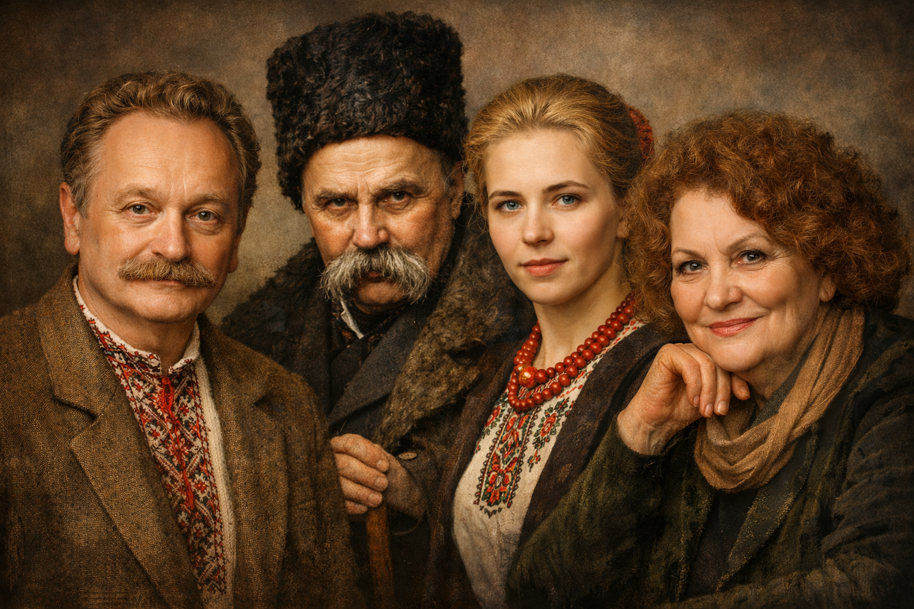

Каталог книг
Опис
Наша онлайн-бібліотека — це простір для тих, хто цінує українську літературу. Тут ви знайдете твори класиків та сучасних авторів, різні жанри — від поезії до драматичних творів. Каталог постійно оновлюється, щоб кожен читач міг відкрити для себе щось нове та надихаюче.
| Автор | Назва | Рік | Жанр |
|---|---|---|---|
| Тарас Шевченко | Кобзар | 1840 | Поезія |
| Ліна Костенко | Маруся Чурай | 1979 | Роман |
| Іван Франко | Захар Беркут | 1883 | Повість |
| Леся Українка | Лісова пісня | 1911 | Драма |
| Всього книг: 4 | |||
Жанри
У бібліотеці представлені різні жанри:
- Поезія
- Драма
- Роман
- Повість
Автори
Відомі українські письменники та поети:
- Тарас Шевченко
- Леся Українка
- Іван Франко
- Ліна Костенко
